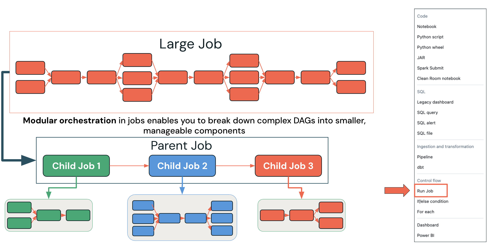

Section 4 · Working with Lakeflow Jobs · Quelle: Kurs 2, Kapitel 13, 15
Ein Job, der im Test funktioniert, ist noch kein produktionsreifer Workflow. Der Übergang von der Entwicklung in den produktiven Betrieb erfordert Entscheidungen zu Compute-Strategie, Kostenmodell, Versionskontrolle und Architektur. Dieses Dokument fasst die wichtigsten Best Practices für den Betrieb von Lakeflow Jobs in Produktionsumgebungen zusammen – inklusive modularer Orchestrierung, bei der ein Job andere Jobs oder Pipelines aufruft.
Für den produktiven Einsatz sind drei Compute-Kategorien relevant, die sich deutlich in Kosten- und Betriebscharakteristik unterscheiden:
| Compute-Typ | Vorteile | Nachteile |
|---|---|---|
| Interactive Clusters | Sofort verfügbar, gut für Exploration | Läuft auch im Leerlauf weiter → unnötige Kosten; nicht für Produktion empfohlen |
| Job Clusters | Terminiert automatisch nach Jobende → deutlich günstiger, dedizierte Ressourcen pro Job | Cloud-seitige Startzeit verzögert den Beginn der Verarbeitung |
| Serverless | Kein Cluster-Management, schnellerer Start, automatische Skalierung, einheitlicher Preis inkl. Infrastruktur | Weniger granulare Infrastruktur-Kontrolle |
Für die meisten produktiven Workloads gilt Serverless heute als bevorzugte Empfehlung, da es operative Komplexität reduziert: Statt separate Kosten für Databricks-Units (DBUs) und Cloud-Infrastruktur (VMs, Netzwerk, Sicherheitsdienste) zu verwalten, entsteht ein einheitlicher DBU-Preis. Klassische Job-Cluster bleiben dennoch eine solide, kosteneffiziente Wahl, insbesondere wenn feingranulare Cluster-Konfiguration benötigt wird.
Große, monolithische Workflows mit hunderten Tasks werden schnell unübersichtlich und schwer wartbar. Die Lösung: den Workflow in logische, fachliche Einheiten zerlegen statt in rein technische Bausteine. Jede Einheit wird als eigener Job modelliert; ein übergeordneter Parent-Job orchestriert die Child-Jobs über den speziellen Task-Typ Run Job. Das bringt mehrere Vorteile:

Praktisch wird dazu zunächst ein eigenständiger Job (z. B. für einen bestimmten Verarbeitungsschritt) erstellt. Im übergeordneten Master-Job wird anschließend ein Task vom Typ Run Job hinzugefügt, der auf diesen eigenständigen Job verweist. Über Depends on und Run if dependencies lässt sich der Run-Job-Task genauso in den DAG einbetten wie jeder andere Task-Typ – inklusive Parameterübergabe und Repair-Run-Unterstützung im Fehlerfall.
Für produktive Jobs empfiehlt sich, den Quellcode direkt aus einem Git-Repository auszuführen, statt Notebooks manuell im Workspace zu pflegen. Das bringt mehrere Vorteile mit sich:
Die Konfiguration erfolgt in zwei Schritten: Zunächst wird für den Task als Quelle ein Git-Provider mit Repository, Branch/Tag und Zugangsdaten hinterlegt; anschließend wird der Pfad zum Hauptnotebook relativ zum Repository-Root angegeben. Für Produktionsumgebungen empfiehlt sich die Nutzung fester Branches oder Tags statt sich ständig ändernder Hauptbranches, kombiniert mit Code-Review-Prozessen vor dem Merge in den Produktions-Branch.
| Bereich | Empfehlung |
|---|---|
| Compute & Kosten | Job-Cluster oder Serverless statt Interactive Clusters; Photon aktivieren; Cluster über Tasks hinweg wiederverwenden, wo möglich |
| Orchestrierung | Komplexe Pipelines modular über Run-Job-Tasks aufteilen; Multi-Task-Jobs für parallele Verarbeitung nutzen; Jobs unter 1000 Tasks halten |
| Monitoring & Governance | Service Principals statt persönlicher Konten für Job-Ownership verwenden; umfassende Benachrichtigungen konfigurieren; Repair & Rerun zur Kostenoptimierung im Fehlerfall nutzen |
| Wiederverwendbarkeit | Tasks konsequent parametrisieren, statt Werte hart zu codieren |